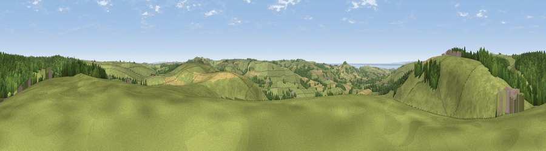

Viewpoint near Long Bredy
#10236 in England · top 26% of its area beats it · near Long BredyThe view, rendered

A 360° render of this exact spot computed from the terrain model, tree cover and land cover — summer colours, afternoon light, calibrated against photographs of famous viewpoints. Real trees, hedges and buildings will differ in detail.
The panorama
Grey silhouette: terrain skyline in each direction (720 bearings, Earth curvature and refraction included). Dashed green: skyline with trees (+15 m) and buildings (+8 m) as obstacles. Blue strip: how far the ground is visible on each bearing.
Where the view opens
Wedge length = distance to the farthest visible ground on that bearing (vegetation-aware). Rings at 10, 25 and 50 km.
What fills the view
75% grassland · 16% woodland · 7% cropland · 1% built-up ·
Angular shares of the visible panorama (visual magnitude), not map area. Landscape diversity 0.34 (0–1 Shannon).
Key numbers
More beautiful places nearby
The staircase of upgrades: each row has a higher view potential than everything closer. Driving times are estimates from straight-line distance, calibrated against real road routing — check an actual route before setting out.
| Place | Direction | Drive | Score |
|---|---|---|---|
| Viewpoint near Long Bredy | WNW · 1 km | ~2 min | 70.6 |
| Viewpoint near Litton Cheney | WNW · 2 km | ~5 min | 75.2 |
| Eggardon Hill | NW · 4 km | ~9 min | 80.3 |
| Viewpoint near Askerswell | NW · 5 km | ~11 min | 81.7 |
| Viewpoint near West Bexington | SSW · 5 km | ~11 min | 88.8 |
| The Knoll | SW · 5 km | ~11 min | 91.0 |
50.71771, -2.60940 · source: screening · position refined by local search. Computed location — check access rights before visiting.